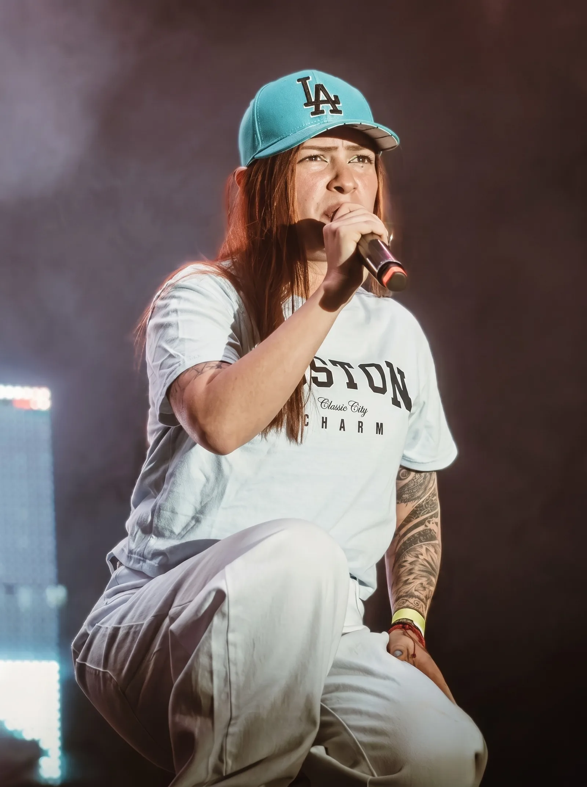
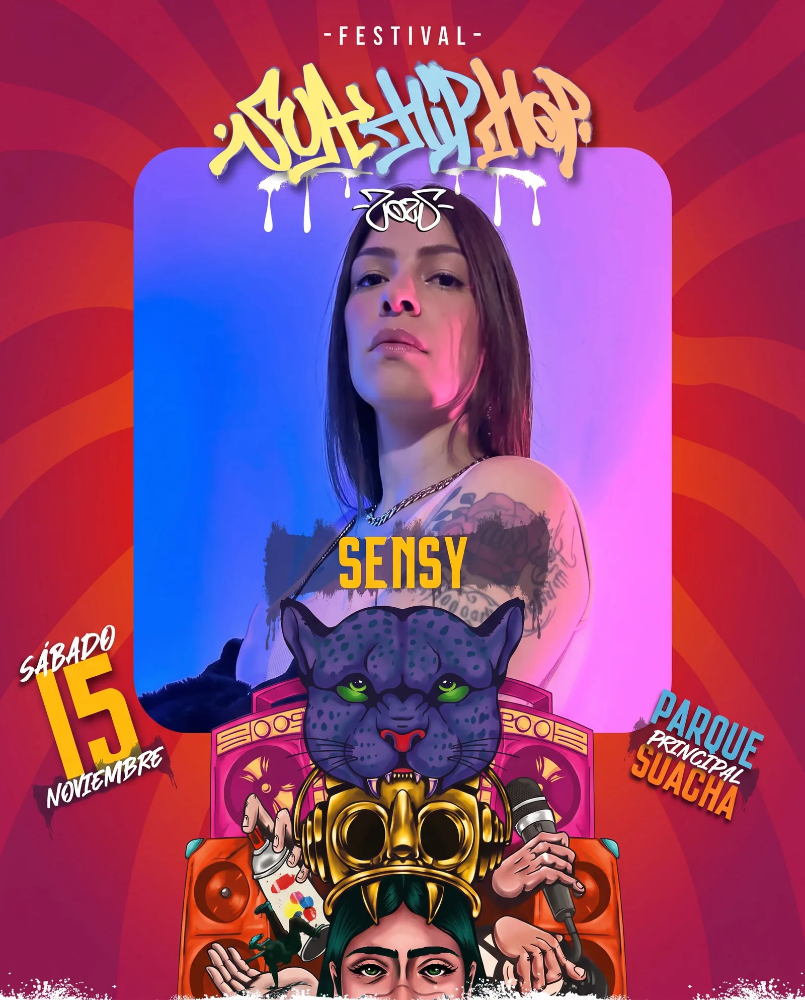
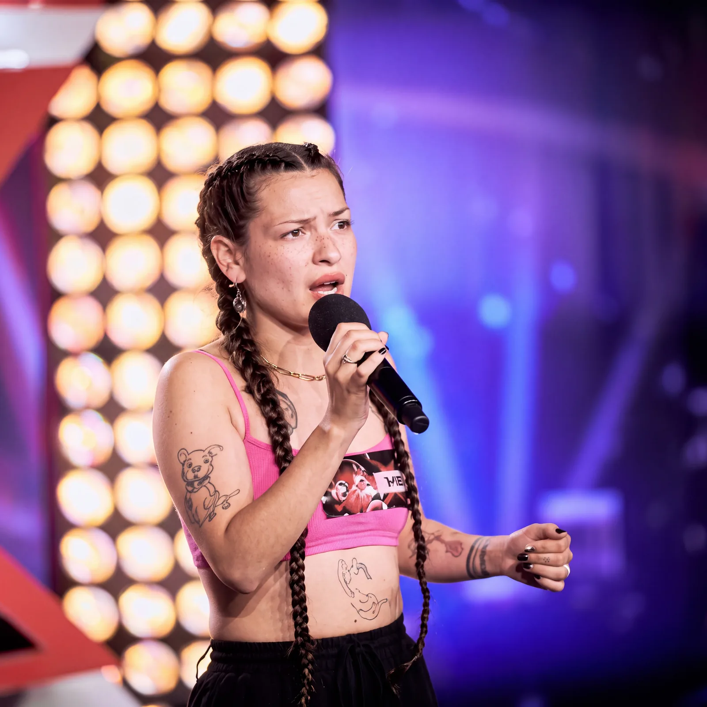
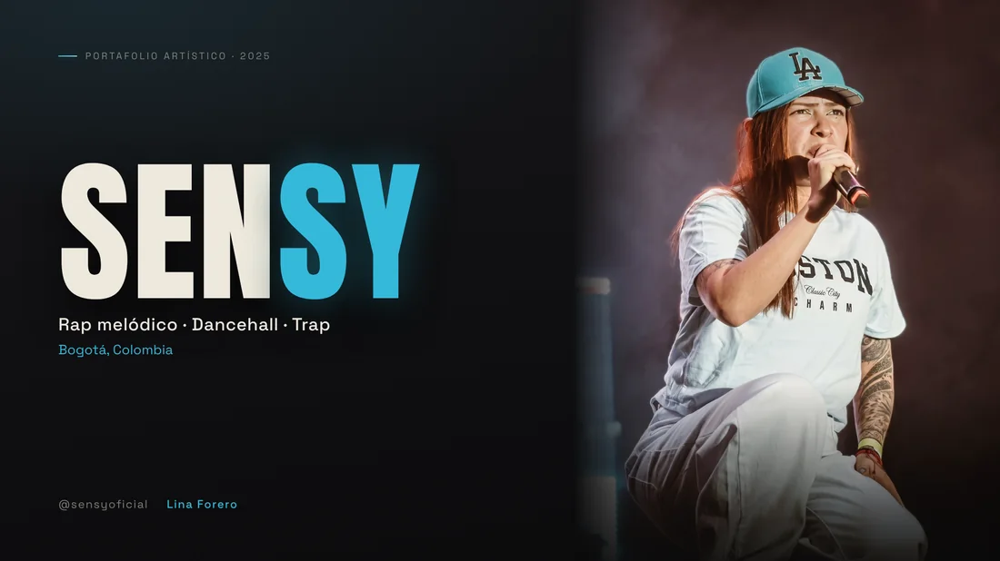

Sencillo · 2025
Esto es Colombia
Ritmos caribeños, barras directas y raíz colombiana.
Escuchar en Spotify
Portafolio artístico · 2025
Rap melódico · Dancehall · Trap
Bogotá, Colombia
01 · Biografía
Lina Forero, conocida en la escena como Sensy, es una rapera nacida en Bogotá. Desde hace más de ocho años comparte su música con la juventud, influenciada por las raíces del hip hop e inspirada en su historia de vida. La dureza de la calle marcó en ella una mujer de valores y determinación: una artista de formación empírica y académica que atrapa a sus oyentes y los sumerge en cada una de sus canciones.

02 · Propuesta artística
Su estilo fusiona rap melódico, dancehall y trap, con letras que celebran la identidad y el poder femenino. En temas como “Esto es Colombia” conecta con sus raíces, combinando ritmos caribeños con barras directas y flow versátil.
Con fuerte presencia escénica y lírica auténtica, representa una nueva generación de mujeres en el hip hop que transforman el género desde lo local hacia lo global.
03 · Trayectoria
2018 — 2025
Festival de Verano de Quito (EC) · Concurso Budweiser · En Clave de Fem · Al Barrio Kariba · Host invitada en Todelar, “Calle Frecuencia”
Factor X · “Muévete”, Embajada de Japón · Premio Bravo Musical (Reynosa, MX) · Jurada en Semana Andina · Festival Mujeres, Arte y Memoria · Hip Hop Soacha
Lanzamiento de “Dirty” · Miércoles de Freestyle (Lima, PE) · Canal 27 Elegi2 TV (Guayaquil, EC)
Lanzamiento de “Bitches” · Bosa Fest 4-20 · Festival Arte a la KY · Festival SUA Hip Hop · Tallerista en rimas y estructuras literarias

04 · Escenario internacional
Festival de Verano de Quito (2018) · Canal 27 Elegi2 TV, Guayaquil (2024)
Premio Bravo Musical y tallerista, Festival “Cuando México Canta”, Reynosa (2023)
Miércoles de Freestyle, Lima (2024)
Factor X · Embajada de Japón · festivales distritales y locales en Bogotá y Soacha
05 · Música
Sencillo · 2025
Ritmos caribeños, barras directas y raíz colombiana.
Escuchar en SpotifySencillo · 2025
Poder femenino sin pedir permiso.
Escuchar en SpotifySencillo · 2024
Rap melódico con flow versátil.
Escuchar en Spotify06 · Reconocimientos y formación
“La sensación de la música urbana de Colombia” — Casa de la Cultura de Reynosa, México.
Taller de rimas y estructuras literarias, Festival Internacional “Cuando México Canta, Actúa y Danza” (2023).
Composición musical, Semana Andina 2023 — Secretaría de Integración Social de Bogotá.
Factor X (2022) · Programa “Muévete”, Embajada de Japón · Host invitada, Emisora Todelar.
07 · Soportes — Certificaciones
Certificados originales disponibles para verificación por parte del jurado de la convocatoria.
Festival Internacional “Cuando México Canta, Actúa y Danza” · Reynosa, MX
Casa Brava Producciones · CES Frontera Norte · Reynosa, MX
Semana Andina · Secretaría de Integración Social de Bogotá
Presentación en vivo · Bogotá, CO
08 · Soportes — Festivales
Programación oficial de festivales y encuentros donde Sensy hizo parte del line-up.
7carteles oficiales · 2021–2025
Bogotá · Soacha · Lima
Presencia escénica
“Una nueva generación de mujeres en el hip hop.”
09 · Rider técnico
Escenario
Producción
Rider adaptable a las condiciones técnicas de cada escenario.

Portafolio en PDF
Las mismas doce láminas de esta página, listas para enviar a una convocatoria, un festival o un programador.
10 · Contacto